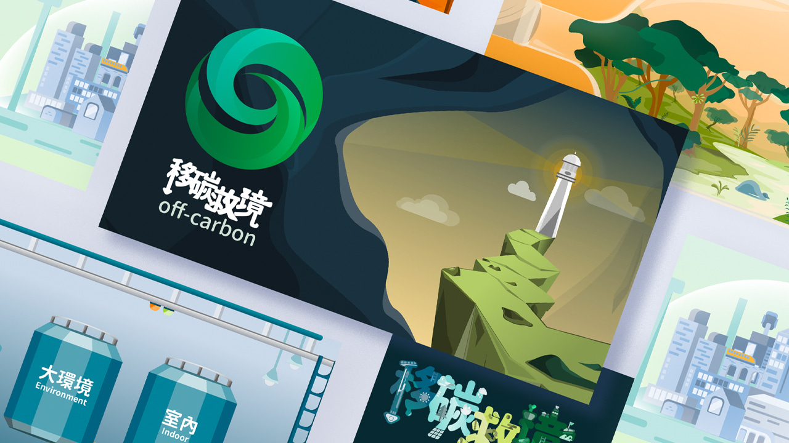
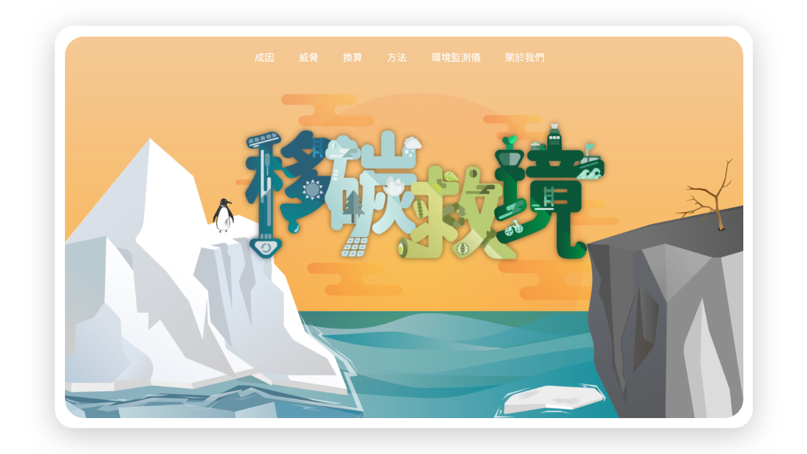
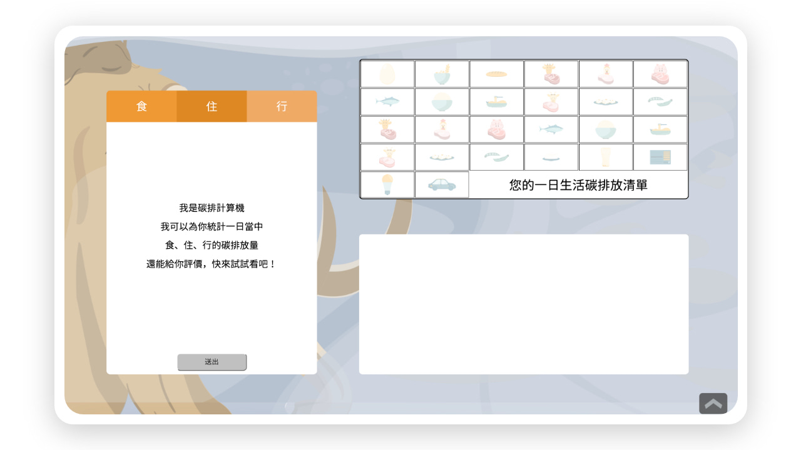
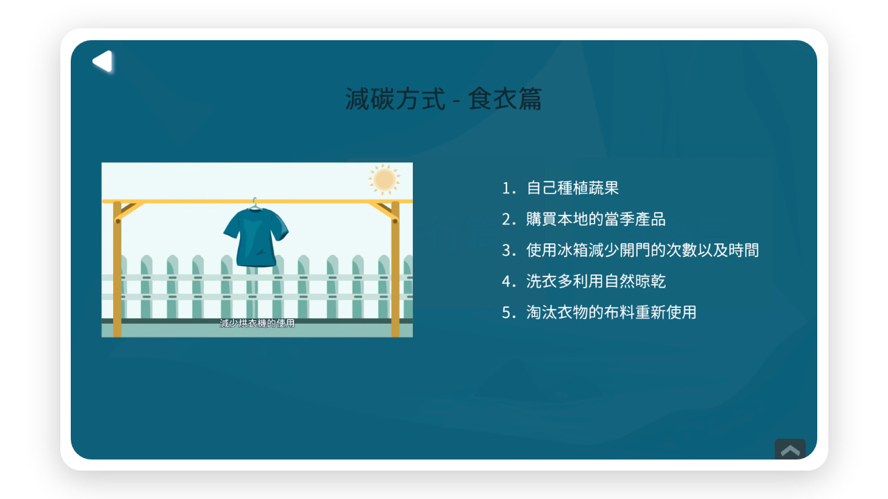
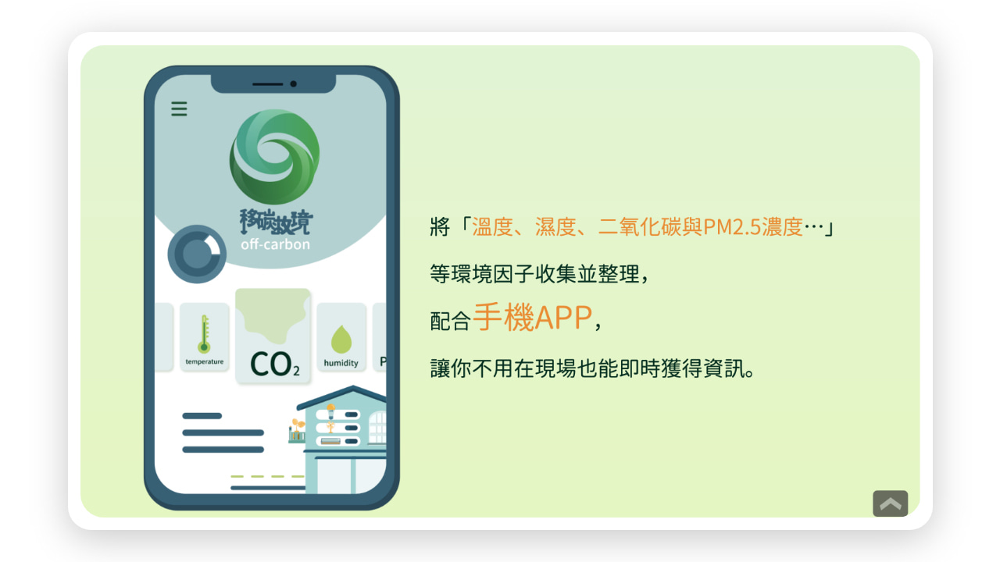

#平面設計 #動態影像與動畫 #應用程式 #網頁設計
移碳救境 off-carbon
組員：魏湘錡、張尹甄、關靖蓉、曾承偉
指導教授：李佩倫
這是一個以二氧化碳為主題的知識型網站，因為全球暖化日益嚴重，因此我們決定從「二氧化碳」進⾏切入，設計互動式網站，來讓我們的受眾能更輕鬆的了解主題。
【創作理念】
生活中常常聽到減少碳⾜跡，縱使環保團體用了很多方式讓我們了解如何能減少日常碳排量，但很多人其實很無感，其一是⼆氧化碳屬於氣體，無色無味因此即使你減碳了也很無感，再者因為⼆氧化碳帶來的影響⼤部分都是間接相關並不是像減少垃圾一樣可以立竿見影，因此常常民眾對此的感受力道並不強。所以我們希望做⼀個資訊整合的網站，從成因到後果，透過一條龍的方式讓⺠民眾能不用到處查找資料，就能輕鬆了解這個環境議題。

【各項產出介紹】
網站：從⼆氧化碳的「成因」作為開始，先簡單簡介二氧化碳的化學特性與⽣生成元素，讓受眾有簡單的了解，其⽬目的是希望受眾能明白我們並非要消滅二氧化碳。

了解成因之後，帶出9⼤自工業⾰命以來因全球暖化引起的氣候災難，以及室內⼆氧化碳濃度對人體影響，讓受眾知道全球暖化並不是假議題，在這種比較艱澀的議題上⽤動圖搭配精簡的文字，並標出內容重點，讓受眾能更更好吸收。
清楚目前的尷尬處境之後，「碳排計算機」讓使⽤者計算在日常⽣生活中的碳排放量，⽤較為趣味的方式去了解到其實我們在無形之間製造了非常可觀的二氧化碳，其⽬的是將「⼆氧化碳」量化與形象化。在未來校外展中，我們會以一個特別的方式呈現我們對未來⽣活的想像。

當⼆氧化碳越來越具象以後，就可以開始減碳了，在網⾴上我們整理了在⽣活中即可執⾏的減碳方法，分為食衣、住行、育樂三項，利⽤動畫呈現。讓受眾想看就看，想點就點。
動畫：在網頁減碳頁，我們以三支動畫呈現我們在日常中可以做哪些行為來減碳，整體以較為有趣⽣動並且以劇情式發展的⽅式呈現，提升學習的樂趣。

環境監測儀：讓受眾能用數據化的方式了解環境因子，利用科技的進步來來改善環境，並且期望能夠達到綠能生活的願景。

【標語】
減碳不是口號，而需⾝體力⾏。我們將網⾴進行整合，條理分明讓受眾了解我們所要傳達的內容，期待共創美好未來。